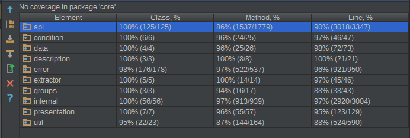
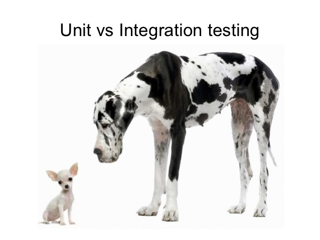

TDD in Java projects
Best practices. Problems and solutions. Tips and Tricks.
Created by Viktar Patotski / Twitter: @xp-vit / Github: xp-vit/LinkedIn:
About Me
- 11+ years in Software Development
- 5 years as Team/Tech Lead
- 4 years in love with TDD
How do you check your prototype?
public static void main(String[] args) {
System.out.println(MyUtil.executeMyAlgorithm("Hello Dolly!"));
}
>> I said hello, Dolly
@Test
public void shouldSayHelloDollyWhenPassingHelloDolly() {
assertThat(MyUtil.executeMyAlgorithm("Hello Dolly!"))
.isEqualTo("I said hello, Dolly");
}TDD? What the heck it is?
Software development technique where you write your automated tests before(!) you write implementation

Software development technique where you write your automated tests together(!) with your implementation
Do I need tests?
| Yes | No |
|---|---|
Check software quality
make sure that written code works as expectedBonus: Find bugs before Implementation sent to QA
Protect Stability
make sure that code will continue work in future as you expected originallyCheck if your code have correct behaviour right in IDE
just write test and run itIndependent development of components
just discuss protocol and implement it separatellyBonus: Easier team scalability ((!) managers killer)
You need to write tests
Disadvantage: Time spent
If I don't need to meke it work, I can go a lot faster. (c) Kent Beck (JUnit creator)
(!) Typing is not an issue!
You need to maintain tests
Disadvantage: Time spent
You need to refactor your code to make it testable
it's not always easy to testDocuments your code better than documentation
it doesn't go out of date, since you're running it all the timeBonus: No need to write(read) developer documentation
Ok, What do I need?
JUnit vs. TestNG
My choice: JUnit
- Better integration with Gradle
- Better integration with Spring
- Better integration with IDE
- Historically...
BTW:JUnit 5 is out
19th of MarchAssumptions and Tags
@Test
@Tag("jenkins")
public void windowsOnly() {
Assumptions.assumeTrue(System.getenv("OS")
.startsWith("Windows"));
}Extension model
@ExtendWith(MockitoExtension.class)
@ExtendWith(CdiUnitExtension.class)
public class Test4 {
@TestOk, What else?
Assertions framework
- native JUnit assertions
- Hamhrest Matchers
- AssertJ
- ...
AssertJ
import static org.assertj.core.api.Assertions.*;
assertThat(fellowshipOfTheRing).hasSize(9)
.contains(frodo, sam)
.doesNotContain(sauron);import static org.assertj.core.api.Assertions.*;
assertThat(fellowshipOfTheRing).extracting("name")
.contains("Boromir", "Gandalf", "Frodo", "Legolas")
.doesNotContain("Sauron", "Elrond");import static org.assertj.core.api.Assertions.*;
assertThat(fellowshipOfTheRing)
.extracting("name", "age", "race.name")
.contains(tuple("Boromir", 37, "Man"),
tuple("Sam", 38, "Hobbit"),
tuple("Legolas", 1000, "Elf"));Anything else?
- Fast PC (SSD preferabele)
- IDE
- CI
Ok, Let's test?
public int summ (String x, String y){
return Integer.parseInt(x) + Integer.parseInt(y);
}What to verify?
- 0+1=1
- 0+2=2
- ...
- 0+99999=99999
- ...
Boundary Conditions
- 3, 5, 7 (Positive Num)
- -3, -5, -7 (Negative Num)
- 0
- Integer.MAX_VALUE, Integer.MIN_VALUE
- null
- one hundred (String number)
- "NooooTaNumber" (NaN)
| \ | +N | -N | 0 | IMax | IMin | null | sNum | NaN |
|---|---|---|---|---|---|---|---|---|
| +N | +N | N | =+N | Ex | -N | Ex | N | Ex |
| -N | N | =-N | -N | N | Ex | Ex | N | Ex |
| 0 | ... | ... | ... | ... | ... | ... | ... | ... |
| IMax | ... | ... | ... | ... | ... | ... | ... | ... |
| \ | +N | -N | 0 | IMax | IMin | null | sNum | NaN |
|---|---|---|---|---|---|---|---|---|
| +N | +N | N | =+N | Ex | -N | Ex | N | Ex |
@Test
public void shouldReturnSumm(){
assertThat(summ("3", "5")).isEqualTo(8);
}@Test (expected = NumberFormatException.class)
public void shouldThrowExWhenPassingNull(){
assertThat(summ(null, "5"));
}Are my tests good enough?
Coverage - is a measure used to describe the degree to which the source code of a program is tested by a particular test suite.
Coverage
- Class coverage
- Method coverage
- Line(Statement) coverage
- Branch coverage
- Condition coverage
if(a && b){
doSomething();
}100% Line Coverage
a = true; b = true;
100% Branch Coverage
a = true; b = true;
a = false; b = true;
100% Condition Coverage
a = false; b = true;
a = true; b = false;
Coverage Measuring Tools
Eclipse + Jacoco plugin (ex. EMMA)


IntelliJ IDEA
IDEA-102075: Update code coverage results to include branch coverage column
Cobertura

My Choice: JaCoCo
- Supported by Eclipse/IDEA
- Supported by Sonar
- Better JUnit support
- Easy integration
Comparison of code coverage tools

Unit and Integration Tests
Unit testing - is a software testing method by which individual units of source code.
Integration testing - is the phase in software testing in which individual software modules are combined and tested as a group.


Test Naming Conventions
Test classes named with postfix Test or IT:
MyUtility.java -> MyUtilityTest.javaMyUtility.java -> MyUtilityMyMethodTest.java
MyService.java -> MyServiceIT.java
Test methods convention:
should(DoSmth)When(Condition)On(Method)shouldReturnCarrierWhenCarrierExistsOnFindOne
shouldThrowExWhenCarrierNotExistsOnFindOne What else?
- Include tests into estimates
- Include tests into DoD
- Include tests run and review into Code Review
- Run tests on CI on each commit
- Post test Results to SonarQube
Easy Recipe to Cook Tests
- Don’t be afraid and be Brave!!!
- Prepare your environment
- Start testing small (atomic) pieces of your functionality
- Always Test: positive flow, boundary conditions, exceptions
- Reproduce all manually found bugs with tests
- Run tests on CI, collect and analyze metrics
- Improve your environment constantly
Huge Project and No Tests
- Create Environment to run Integration Tests
- Cover your major functionality with IT
- Start refactoring to break your Project to smaller pieces and Unit test those pieces
- Use IT from Point 2 to make sure Project is still Stable